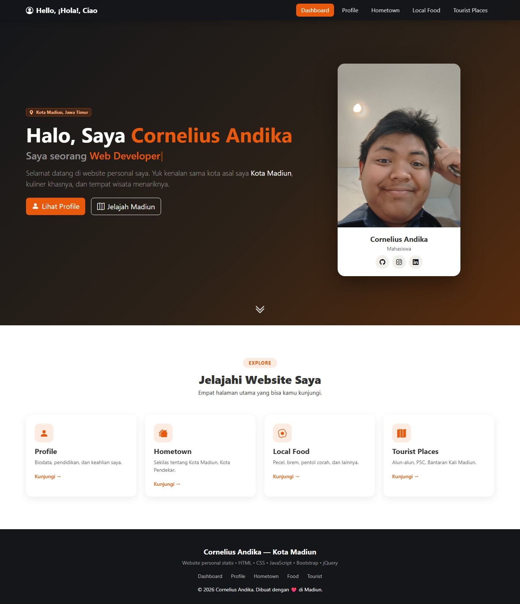
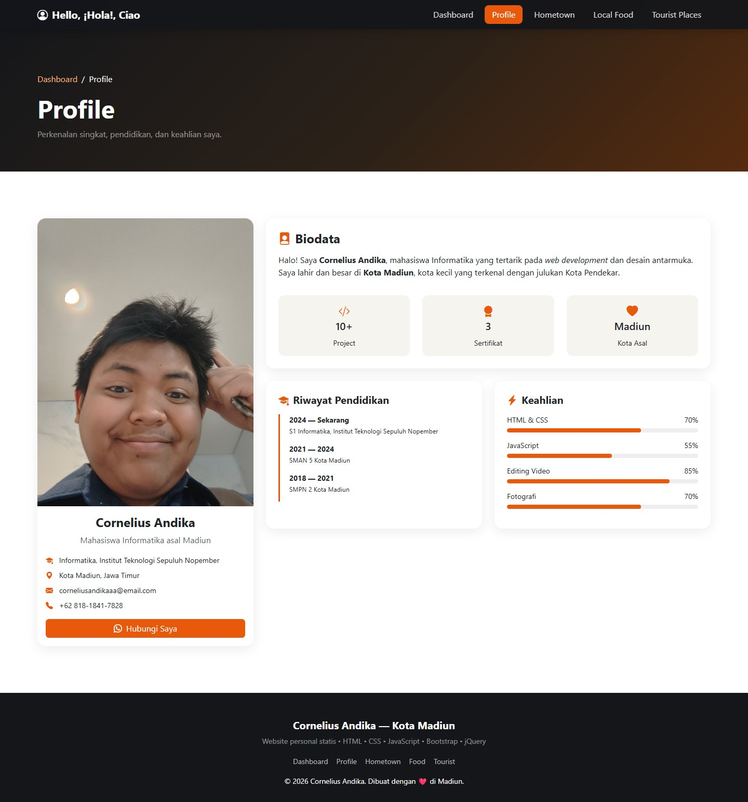
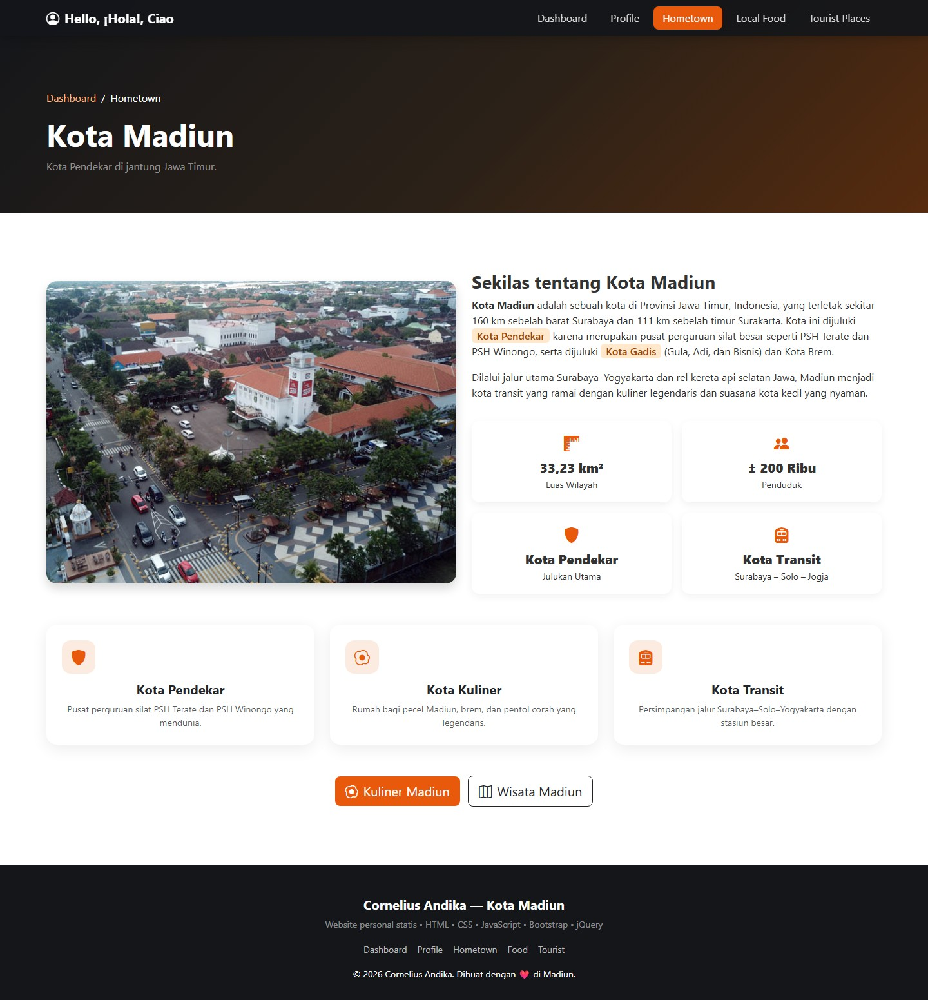
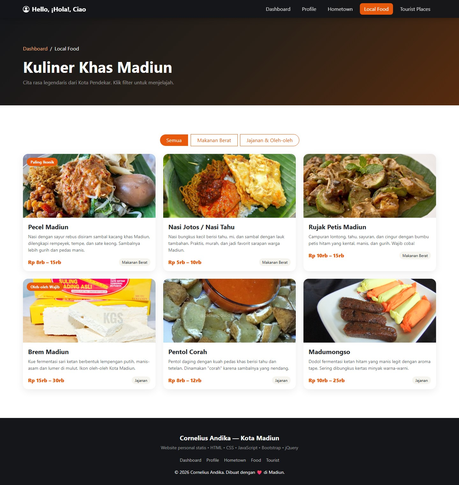
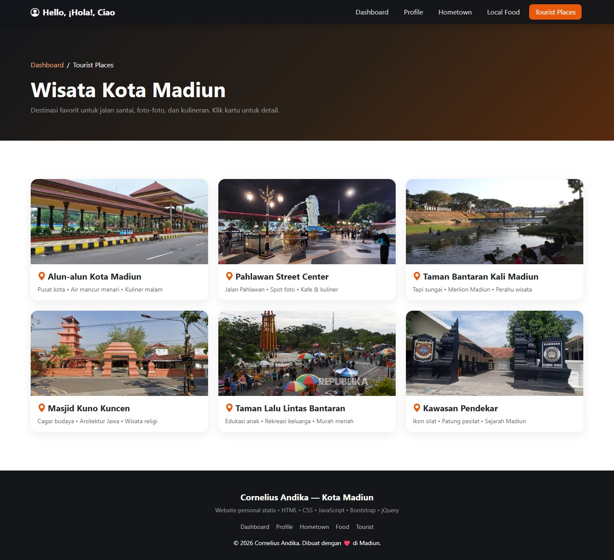
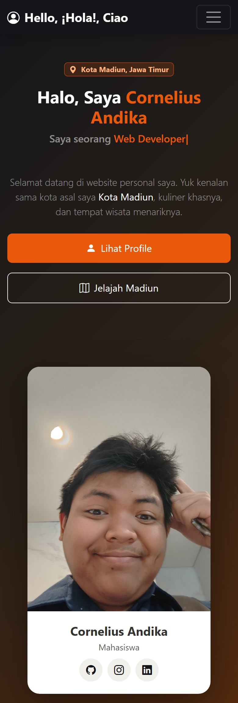
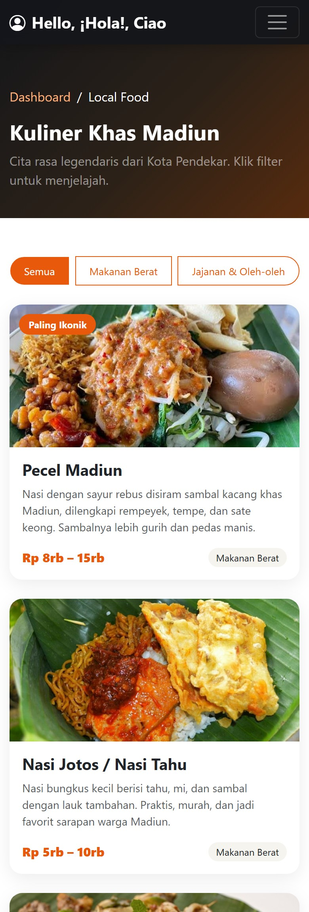

|
Project Report
Personal Website Kota MadiunWebsite statis multi-halaman berbasis HTML, CSS, JavaScript,
|
Tugas ini meminta pembuatan sebuah personal website statis yang memperkenalkan diri penulis sekaligus kota asal penulis, yaitu Kota Madiun. Website dibangun hanya dengan HTML, CSS, dan JavaScript, dengan bantuan library jQuery serta framework Bootstrap untuk mempercepat pembuatan layout dan komponen antarmuka.
Kota Madiun dipilih karena memiliki identitas lokal yang kuat dan mudah dikemas menjadi konten: julukan Kota Pendekar, kuliner legendaris seperti pecel dan brem, serta sejumlah ruang publik yang menjadi ikon kota. Materi tersebut dibagi menjadi lima halaman agar penyajiannya fokus dan tidak menumpuk dalam satu halaman panjang.
Konsep yang diangkat adalah “hangat, lokal, dan bersih”. Karena Madiun dikenal lewat kulinernya, warna aksen yang dipakai adalah oranye bara (burnt orange) di atas latar netral gelap pada bagian header, dan latar krem terang pada bagian konten. Kombinasi ini membuat foto makanan dan foto wisata tampil menonjol, sekaligus menjaga kesan hangat khas kota kecil.
Tiga prinsip desain yang dipegang:
#e8590cAksen utama |
#c94a08Aksen gelap (hover) |
#14161aLatar gelap |
#f6f4efLatar terang |
#ffffffKartu |
Seluruh nilai warna disimpan sebagai CSS custom property pada :root sehingga perubahan tema cukup dilakukan di satu tempat.
Font yang dipakai adalah system font stack 'Segoe UI', system-ui, sans-serif. Pilihan ini membuat halaman tetap terasa “asli” pada setiap sistem operasi, tidak menambah permintaan jaringan, dan menjaga kecepatan muat. Hierarki visual dibentuk lewat perbedaan ukuran dan ketebalan, bukan lewat banyak jenis huruf.
Struktur folder dirancang menyerupai struktur URL. Setiap halaman menempati foldernya sendiri dan diberi nama berkas index.html, sehingga URL yang dihasilkan bersih tanpa ekstensi.
personal-website/ ├─ quiz1/ │ ├─ index.html ← /quiz1 (Dashboard) │ ├─ profile/index.html ← /quiz1/profile │ ├─ hometown/index.html ← /quiz1/hometown │ ├─ food/index.html ← /quiz1/food │ ├─ tourist/index.html ← /quiz1/tourist │ ├─ css/style.css ← gaya kustom (1 berkas, dipakai bersama) │ ├─ js/script.js ← interaksi jQuery (1 berkas, dipakai bersama) │ └─ images/ ← 14 foto: profil, kuliner, wisata ├─ report/ ← berkas laporan ini ├─ vercel.json ← konfigurasi routing saat deploy └─ start.bat ← pembantu menjalankan server lokal
Satu berkas CSS dan satu berkas JavaScript dipakai oleh kelima halaman. Pendekatan ini menghindari duplikasi kode dan membuat perbaikan tampilan cukup dilakukan sekali.
| URL | Halaman | Isi utama |
|---|---|---|
/quiz1 | Dashboard | Perkenalan singkat, foto profil, statistik, dan kartu navigasi ke empat halaman lain |
/quiz1/profile | Profile | Biodata, riwayat pendidikan, indikator keahlian, dan tombol hubungi via WhatsApp |
/quiz1/hometown | Hometown | Deskripsi Kota Madiun, julukan kota, dan data ringkas wilayah |
/quiz1/food | Local Food | Enam kuliner khas dengan filter kategori dan rentang harga |
/quiz1/tourist | Tourist Places | Enam destinasi wisata dengan jendela detail (modal) |
Navigasi memakai pola hub-and-spoke: Dashboard berperan sebagai pusat, dan keempat halaman lain dapat dijangkau langsung dari navbar di halaman mana pun. Setiap sub-halaman juga menampilkan breadcrumb (misalnya Dashboard / Local Food) agar posisi pengunjung selalu jelas. Halaman Hometown menambahkan tombol pintas menuju halaman kuliner dan wisata sebagai penghubung antar-topik yang berdekatan.
Seluruh tangkapan layar di bawah ini diambil dari website yang dijalankan langsung, pada lebar jendela 1440 px untuk tampilan desktop. Ukuran gambar disesuaikan penuh (full page), sehingga memperlihatkan keseluruhan isi setiap halaman.

/quiz1): bagian pembuka dengan efek ketik, statistik berjalan, dan kartu navigasi.
/quiz1/profile): kartu identitas, biodata, riwayat pendidikan, dan indikator keahlian.
/quiz1/hometown): deskripsi Kota Madiun, data ringkas wilayah, dan kartu julukan kota.
/quiz1/food): enam kuliner khas dalam grid kartu, lengkap dengan tombol filter kategori.
/quiz1/tourist): enam destinasi wisata; setiap kartu dapat diklik untuk membuka detail.Tangkapan layar berikut diambil pada lebar 390 px (setara layar ponsel) untuk membuktikan bahwa tata letak menyesuaikan diri dengan baik.
|
 |
 |
Setiap halaman memakai kerangka yang sama: <nav> untuk navigasi, <header> untuk bagian pembuka, satu atau lebih <section> untuk isi, dan <footer> untuk penutup. Tag semantik ini membantu mesin pencari dan pembaca layar memahami bagian halaman.
Lima halaman itu berbagi navbar yang sama. Hanya penanda active yang berpindah sesuai halaman yang sedang dibuka:
<nav id="mainNav" class="navbar navbar-expand-lg navbar-dark fixed-top"> <div class="container"> <a class="navbar-brand fw-bold" href="./">...</a> <button class="navbar-toggler" data-bs-toggle="collapse" data-bs-target="#navMenu"> <div class="collapse navbar-collapse" id="navMenu"> <ul class="navbar-nav ms-auto"> <li><a class="nav-link active" href="./">Dashboard</a></li> <li><a class="nav-link" href="profile/">Profile</a></li> ...
Kelas navbar-expand-lg adalah kunci keramahan mobile: di atas lebar 992 px menu tampil mendatar, sedangkan di bawahnya menu otomatis terlipat menjadi tombol hamburger.
Isi halaman disusun memakai sistem 12 kolom Bootstrap. Sebagai contoh, pada halaman Local Food setiap kartu memakai col-md-6 col-lg-4:
<div class="row g-4"> <div class="col-md-6 col-lg-4 reveal food-item" data-cat="berat"> ... </div> ... </div>
Artinya: satu kartu per baris pada ponsel, dua kartu per baris pada tablet (md), dan tiga kartu per baris pada desktop (lg). Kelas g-4 memberi jarak antar-kolom secara otomatis.
Berkas quiz1/css/style.css (114 baris) hanya berisi gaya tambahan di atas Bootstrap, dengan urutan: variabel tema, komponen per bagian, lalu aturan responsif.
:root {
--accent: #e8590c; /* oranye bara */
--accent-dark: #c94a08;
--dark: #14161a;
--muted-bg: #f6f4ef;
}
Elemen bertanda kelas reveal mulai dari keadaan transparan dan bergeser sedikit ke bawah, lalu menjadi normal ketika kelas visible ditambahkan oleh JavaScript.
.reveal { opacity: 0; transform: translateY(30px); transition: all .7s ease; }
.reveal.visible { opacity: 1; transform: none; }
Pilihan implementasi: karena efek ini bergantung pada JavaScript, ditambahkan pengaman <noscript> di setiap halaman yang langsung menampilkan seluruh elemen. Tanpa pengaman ini, isi halaman akan tidak terlihat bila JavaScript gagal dimuat.
Agar foto profil tampil utuh tanpa terpotong, tinggi gambar tidak dipatok dan rasio asli dipertahankan:
.hero-img { width: 100%; height: auto; display: block; }
.profile-card img { width: 100%; height: auto; display: block; }
Sebaliknya, foto kuliner dan wisata sengaja dipangkas seragam memakai height: 200px; object-fit: cover; supaya tinggi kartu konsisten dan grid tetap rapi.
Ada dua titik henti (breakpoint) tambahan: max-width: 991.98px untuk tablet dan max-width: 575.98px untuk ponsel. Pada ponsel, ukuran huruf judul diperkecil, tombol menjadi selebar penuh, dan tombol filter dibagi rata:
@media (max-width: 575.98px) {
.hero .display-4 { font-size: 1.75rem; }
.hero .btn-lg { width: 100%; }
.filter-group .btn-filter { flex: 1 1 auto; padding: 8px 10px; }
}
Berkas quiz1/js/script.js (55 baris) dibungkus dalam $(function () { ... }) sehingga seluruh kode berjalan setelah dokumen siap. Berikut fungsi-fungsi yang dijalankan.
Kalimat “Saya seorang …” diisi bergantian dari sebuah daftar kata. Teks ditampilkan karakter demi karakter, lalu dihapus, lalu lanjut ke kata berikutnya.
var words = ['Web Developer', 'Mahasiswa Informatika', 'Warga Madiun', 'Pecinta Pecel']; var wi = 0, ci = 0, deleting = false; (function type() { var word = words[wi]; $('#typed').text(word.slice(0, ci)); if (!deleting) { ci++; if (ci > word.length) { deleting = true; return setTimeout(type, 1500); } } else { ci--; if (ci === 0) { deleting = false; wi = (wi + 1) % words.length; } } setTimeout(type, deleting ? 50 : 110); })();
Blok ini hanya dijalankan bila elemen #typed ada (if ($('#typed').length)). Karena elemen itu hanya ada di Dashboard, berkas JavaScript yang sama tetap aman dipakai di halaman lain.
$('.counter').each(function () {
var $el = $(this), target = +$el.data('target'), done = false;
function check() {
if (!done && $el.offset().top < $(window).scrollTop() + $(window).height()) {
done = true;
$({ n: 0 }).animate({ n: target }, { duration: 1200,
step: function (v) { $el.text(Math.round(v)); } });
}
}
$(window).on('scroll', check); check();
});
Nilai target dibaca dari atribut data-target di HTML, sehingga untuk mengubah angka cukup mengubah HTML tanpa menyentuh JavaScript. Animasi angka memanfaatkan $.animate pada objek kosong — teknik jQuery untuk menganimasikan nilai non-CSS.
$('.btn-filter').on('click', function () {
$('.btn-filter').removeClass('active'); $(this).addClass('active');
var f = $(this).data('filter');
$('.food-item').each(function () {
var show = f === 'all' || $(this).data('cat') === f;
if (show) $(this).fadeIn(300); else $(this).fadeOut(300);
});
});
Kategori setiap makanan disimpan pada atribut data-cat, dan tombol menyimpan pilihannya pada data-filter. Pendekatan ini membuat penambahan menu baru tidak memerlukan perubahan kode sama sekali — cukup tulis kartu baru dengan atribut yang sesuai.
$('.place-card').on('click', function () {
$('#placeModalTitle').text($(this).data('title'));
$('#placeModalDesc').text($(this).data('desc'));
});
Judul dan deskripsi destinasi disimpan di atribut data-title dan data-desc pada tiap kartu. Saat kartu diklik, isi modal diganti sesuai kartu tersebut. Modal dibuka oleh atribut data-bs-toggle="modal" milik Bootstrap.
function reveal() { $('.reveal').each(function () { if ($(this).offset().top < $(window).scrollTop() + $(window).height() - 60) $(this).addClass('visible'); }); } $(window).on('scroll', reveal); reveal();
$(window).on('scroll', function () { $('#backTop').toggle($(this).scrollTop() > 400); });
$('#backTop').on('click', function () { $('html, body').animate({ scrollTop: 0 }, 700); });
Tombol ini baru muncul setelah pengunjung menggulir lebih dari 400 px, dan memakai animasi gulir halus.
$('#navMenu .nav-link').on('click', function () {
var nav = document.getElementById('navMenu');
var toggler = document.querySelector('.navbar-toggler');
if (toggler && window.getComputedStyle(toggler).display !== 'none' && nav.classList.contains('show')) {
var c = bootstrap.Collapse.getInstance(nav) || new bootstrap.Collapse(nav, { toggle: false });
c.hide();
}
});
Catatan revisi: versi awal memakai $('.navbar-collapse').collapse('hide'). Cara itu tidak berfungsi karena Bootstrap 5 sudah menghapus antarmuka plugin jQuery-nya, sehingga muncul galat “collapse is not a function” dan menu mobile tidak menutup. Perbaikan dilakukan dengan memakai API resmi bootstrap.Collapse.
$('#year').text(new Date().getFullYear());
Dengan cara ini tahun hak cipta tidak perlu diperbarui manual setiap tahun.
Agar URL berbentuk /quiz1/food dan bukan /quiz1/food/index.html, dipakai pola folder + index.html. Server web yang menyajikan folder akan mencari berkas index.html di dalamnya secara otomatis. Karena itulah setiap halaman diberi foldernya sendiri dengan nama berkas index.html.
Pada halaman lain, tautan ditulis relatif agar konsisten di semua kedalaman folder:
<!-- dari /quiz1/ (Dashboard) --> <a href="profile/">Profile</a> <!-- dari /quiz1/profile/ --> <a href="../tourist/">Tourist Places</a>
Penting: pola URL bersih ini hanya bekerja bila website diakses melalui web server. Jika berkas dibuka langsung dari filesystem (file://), browser akan menampilkan daftar isi folder, bukan halaman. Karena itu disertakan start.bat yang menjalankan server lokal sekali klik.
Untuk memastikan semua URL bekerja setelah deploy, dibuat konfigurasi berikut:
{
"redirects": [
{ "source": "/", "destination": "/quiz1/", "permanent": false }
],
"rewrites": [
{ "source": "/quiz1", "destination": "/quiz1/index.html" },
{ "source": "/quiz1/", "destination": "/quiz1/index.html" },
{ "source": "/quiz1/profile", "destination": "/quiz1/profile/index.html" },
{ "source": "/quiz1/profile/", "destination": "/quiz1/profile/index.html" }
...
]
}
Bagian redirects mengarahkan alamat utama (halaman depan domain) ke Dashboard karena di akar proyek tidak ada index.html. Bagian rewrites memetakan setiap URL bersih ke berkas index.html yang sesuai, mencakup bentuk dengan dan tanpa garis miring di akhir. Rewrite tidak mengubah URL di bilah alamat, sehingga URL tetap bersih.
Pengujian dilakukan dengan menjalankan server lokal, lalu memeriksa setiap alamat. Seluruh berkas diakses berhasil tanpa galat.
| Alamat | Status | Keterangan |
|---|---|---|
/quiz1/ | 200 OK | Dashboard tampil penuh |
/quiz1/profile/ | 200 OK | Foto, biodata, dan tombol WhatsApp tampil |
/quiz1/hometown/ | 200 OK | Deskripsi dan kartu julukan tampil |
/quiz1/food/ | 200 OK | Enam kartu tampil; filter berfungsi |
/quiz1/tourist/ | 200 OK | Enam kartu tampil; modal berfungsi |
/quiz1/css/style.css | 200 OK | Berkas gaya termuat |
/quiz1/js/script.js | 200 OK | Skrip termuat |
/quiz1/images/profile.jpg | 200 OK | Foto profil termuat |
Pengujian tampilan dilakukan pada dua lebar layar: 1440 px (desktop) dan 390 px (ponsel). Pada kedua ukuran, tidak ditemukan elemen yang saling menumpuk, teks terpotong, maupun gulir mendatar.
| Lebar | Kelas Bootstrap aktif | Perilaku |
|---|---|---|
| ≥ 992 px (desktop) | col-lg-* | Menu mendatar; konten 3–4 kolom |
| 768–991 px (tablet) | col-md-* | Menu terlipat; konten 2–3 kolom |
| < 768 px (ponsel) | satu kolom | Menu hamburger; konten satu kolom; tombol selebar penuh |
Foto profil awalnya berukuran 2448 × 3264 piksel dengan ukuran berkas 1,37 MB. Angka itu terlalu berat untuk sebuah foto profil, sehingga dilakukan pemotongan dimensi (menjadi 800 × 1067 piksel) dan penurunan kualitas kompresi. Hasilnya berkas menyusut menjadi 79 KB, atau turun sekitar 94%, tanpa penurunan kualitas yang terlihat pada ukuran tampil di halaman.
Selain itu, ditemukan bahwa foto asli menyimpan informasi rotasi (EXIF orientation) dengan nilai 8. Perkakas pengolah gambar yang mengabaikan informasi ini akan menghasilkan gambar yang miring. Masalah tersebut diatasi dengan memutar gambar terlebih dahulu sebelum diperkecil.
Meski demikian, masih ada beberapa foto konten yang ukurannya cukup besar dan belum dioptimasi:
| Berkas | Ukuran | Catatan |
|---|---|---|
| Madumongso.jpg | 1,78 MB | Perlu dikompres |
| AlunAlun.jpg | 1,04 MB | Perlu dikompres |
| TamanBantaran.jpg | 786 KB | Perlu dikompres |
| TamanLaluLintas.jpg | 596 KB | Perlu dikompres |
| NasiJotos.jpeg | 550 KB | Perlu dikompres |
Total ukuran seluruh berkas proyek saat ini sekitar 6 MB, dan lebih dari 90% di antaranya berasal dari folder gambar.
data-* di HTML, sehingga penambahan konten tidak menuntut perubahan JavaScript.<noscript>, teks alternatif (alt) pada gambar, dan favicon yang disertakan langsung sehingga tidak menimbulkan permintaan berkas yang gagal.| Kekurangan | Usulan perbaikan |
|---|---|
| Beberapa foto masih berukuran besar (hingga 1,78 MB) | Kompres seluruh foto dan ubah ke format WebP agar hemat 60–80% |
Gambar belum memakai loading="lazy" | Tambahkan atribut tersebut pada gambar di bawah lipatan layar untuk mempercepat muat awal |
| Isi konten ditulis langsung di HTML | Pindahkan daftar kuliner dan wisata ke berkas JSON, lalu susun kartunya dengan JavaScript agar penambahan data lebih mudah |
| Pilihan filter tidak tersimpan di URL | Simpan kategori aktif pada query string atau hash sehingga dapat dibagikan dan bertahan saat halaman dimuat ulang |
| Belum ada halaman 404 khusus | Tambahkan halaman 404.html agar alamat yang salah tetap menampilkan navigasi website |
| Belum ada metadata berbagi | Tambahkan Open Graph (og:title, og:image) agar tautan tampil menarik saat dibagikan |
Dua hal paling berharga dari pengerjaan tugas ini. Pertama, pentingnya memahami perbedaan antara membuka berkas langsung (file://) dan mengaksesnya melalui web server — keduanya memberi hasil berbeda, dan pemahaman ini yang membuat pola URL bersih dapat bekerja. Kedua, sebuah kode dapat terlihat benar namun tetap salah: pemanggilan .collapse() pada Bootstrap 5 adalah contohnya, karena galatnya hanya muncul di konsol dan baru terasa pada perangkat mobile.
Personal website Kota Madiun telah selesai dibangun sesuai ketentuan tugas. Kelima halaman yang diminta — Dashboard, Profile, Hometown, Local Food, dan Tourist Places — tersedia dan dapat diakses melalui struktur URL yang bersih, yaitu /quiz1 untuk halaman utama dan /quiz1/profile, /quiz1/hometown, /quiz1/food, serta /quiz1/tourist untuk halaman lainnya.
Dari sisi teknis, proyek ini menerapkan HTML semantik, gaya kustom berbasis variabel CSS, sistem grid responsif Bootstrap 5, serta manipulasi DOM dan animasi dengan jQuery. Seluruh halaman berhasil melewati pengujian pada server lokal dengan status 200 OK dan tampil baik pada lebar layar 390 px hingga 1440 px.
Proyek ini juga menghasilkan sejumlah perbaikan nyata dari proses evaluasi, antara lain penghapusan pemanggilan API jQuery yang tidak lagi tersedia di Bootstrap 5, perbaikan orientasi foto berdasarkan data EXIF, serta penurunan ukuran foto profil hingga sekitar 94%. Perbaikan yang masih terbuka — terutama pengompresan foto konten dan penyimpanan data ke berkas terpisah — telah dicatat pada Subbab 5.5 sebagai arahan pengembangan berikutnya.
Secara keseluruhan, proyek ini memenuhi tujuan pembelajaran: menerapkan HTML, CSS, dan JavaScript dalam satu karya utuh, membangun antarmuka responsif, serta mempublikasikannya melalui GitHub dan layanan hosting statis.
| Berkas | Baris | Keterangan |
|---|---|---|
quiz1/index.html | 127 | Dashboard |
quiz1/profile/index.html | 104 | Profile |
quiz1/hometown/index.html | 85 | Hometown |
quiz1/food/index.html | 125 | Local Food |
quiz1/tourist/index.html | 101 | Tourist Places |
quiz1/css/style.css | 114 | Gaya kustom seluruh halaman |
quiz1/js/script.js | 55 | Skrip jQuery seluruh halaman |
vercel.json | 18 | Konfigurasi routing deploy |
| Teknologi | Versi | Peran |
|---|---|---|
| HTML5 | — | Struktur dan isi halaman |
| CSS3 | — | Gaya, tata letak, dan animasi |
| JavaScript (ES5+) | — | Interaksi dan manipulasi DOM |
| jQuery | 3.7.1 | Penyederhanaan seleksi DOM dan animasi |
| Bootstrap | 5.3.3 | Grid responsif dan komponen (navbar, kartu, modal) |
| Bootstrap Icons | 1.11.3 | Ikon antarmuka |
| Git & GitHub | — | Kendali versi dan penyimpanan kode |
| Vercel | — | Hosting statis |
https://github.com/corneliusandika/Quiz1-WebPro